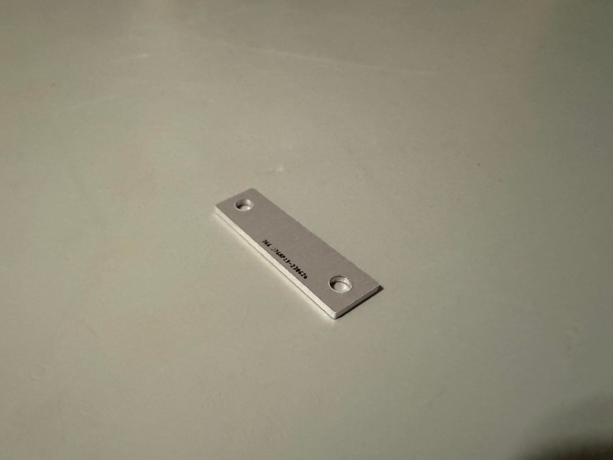
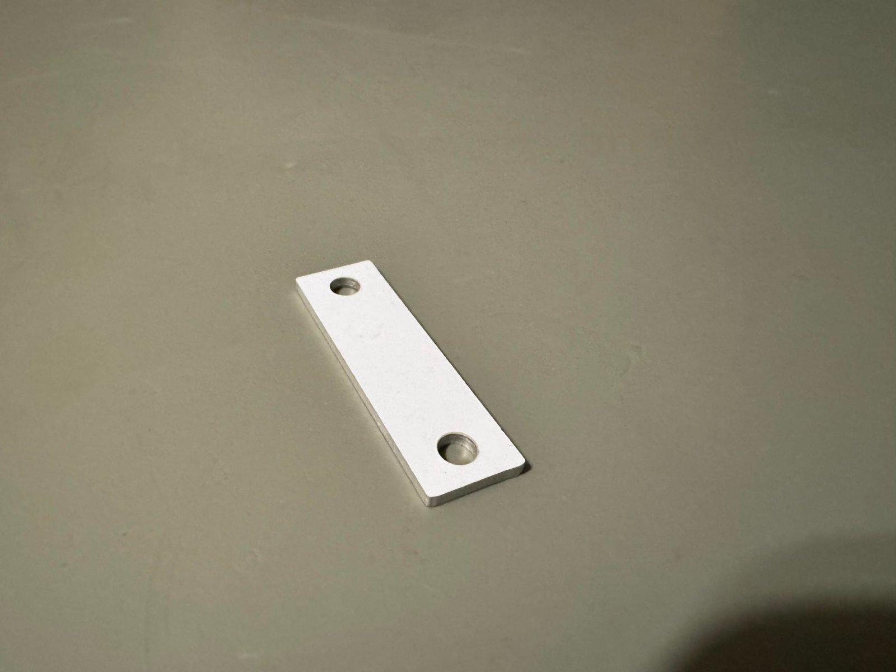
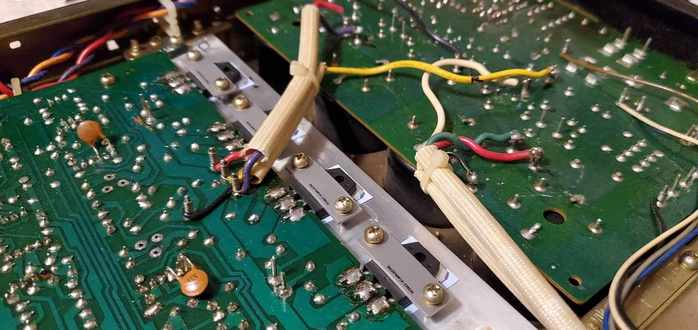
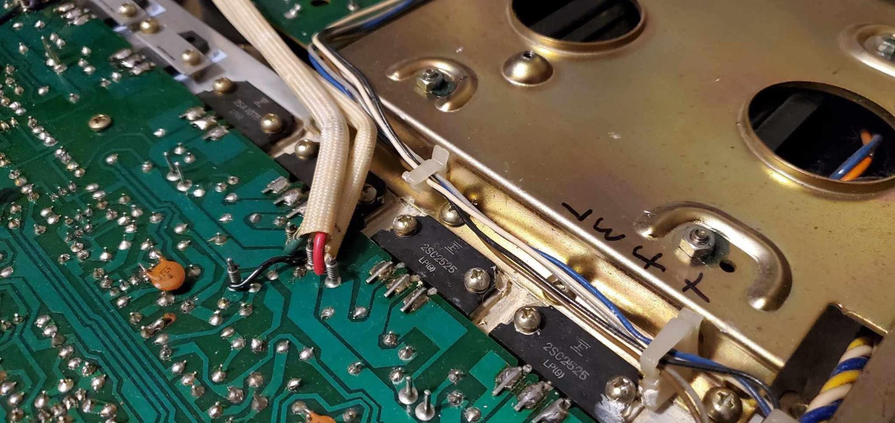

MT200 To TO3P Slimline Adapter
For your consideration is an adapter plate that allows you to adapt a TO3P transistor in place of an MT200 transistor. This particular adapter is designed for the smaller MT200 variants used in Pioneer amplifiers and other products.
MT200 transistors of specific types used in a variety of amplifiers in the late 80s to early 90s are becoming harder to come by or are completely discontinued, and instead TO3P style packages are becoming the norm. Instead of buying sketchy transistors or overpaying for genuine MT200 transistors, just buy these adapter plates instead!
These boards are made out of an aluminum PCB substrate, making them both incredibly rigid and strong, and impervious to any issues caused by the heat emitted from the power transistors. Simply remove the original transistor, solder in your TO3P replacement device, and bolt it down using the PCB plate to clamp down the new transistor. A simple and elegant solution requiring no additional labor, and no drilling of the heat sinks. See the photos above to get an idea of how these plates work.
Note: Due to the incredible variety of screw sizes present in this gear, I cannot guarantee the original screws used to hold down the original MT200 transistors will be long enough to thread through the hole with the adapter plate added. These have been tested on multiple pieces of gear and so far there have been no issues observed with screw length, but keep in mind it is a possibility with using this adapter board.